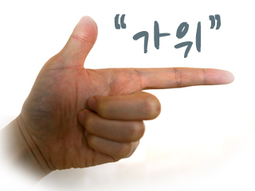
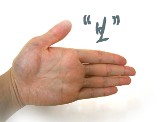

<!DOCTYPE html>
<html>
<head>
<meta charset="UTF-8">
<title>수학 객체</title>
</head>
<body>


<script>
//1부터 3까지 난수(정수)를 발생(컴퓨터 가위(1), 바위(2), 보(3))
//난수를 이용해 컴퓨터 가위 바위 보 이미지 출력
//사용자가 낸 값과 컴퓨터의 값이 일치하는지 조건검사.

	var num = Math.floor(Math.random() * 3)+1;
	var str = prompt("가위, 바위, 보 중 선택하세요","정확히입력해주세요");
	
	if(num == 1){
		document.write("");
		if(str == "가위"){
			setTimeout(function(){alert("짝짝짝! 맞췄습니다!");},300);
		}else{
			setTimeout(function(){alert("땡! 다음에 다시 도전하세요!");},300);
		}
	}else if(num == 2){
		document.write("");
		if(str == "바위"){
			setTimeout(function(){alert("짝짝짝! 맞췄습니다!");},300);
		}else{
			setTimeout(function(){alert("땡! 다음에 다시 도전하세요!");},300);
		}
	}else if(num == 3){
		document.write("");
		if(str == "보"){
			setTimeout(function(){alert("짝짝짝! 맞췄습니다!");},300);
		}else{
			setTimeout(function(){alert("땡! 다음에 다시 도전하세요!");},300);
		}
	}
</script>
</body>
</html>